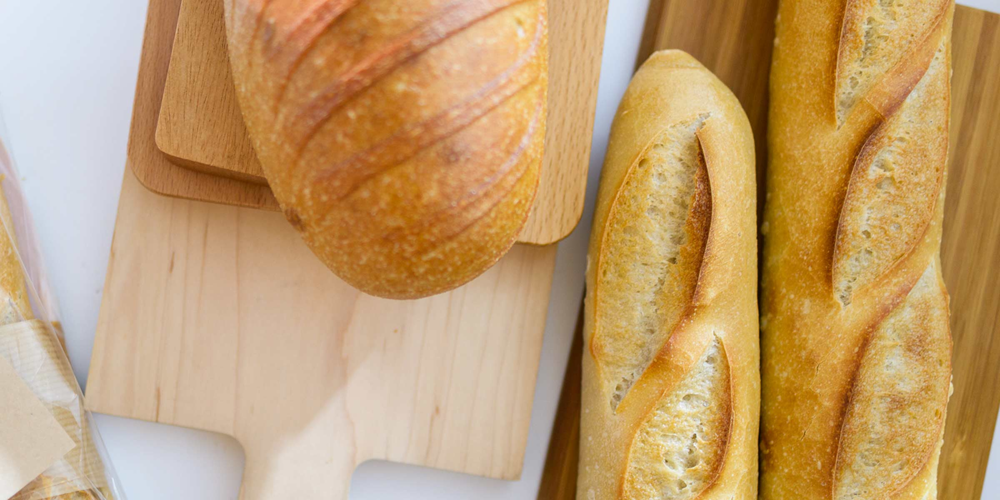
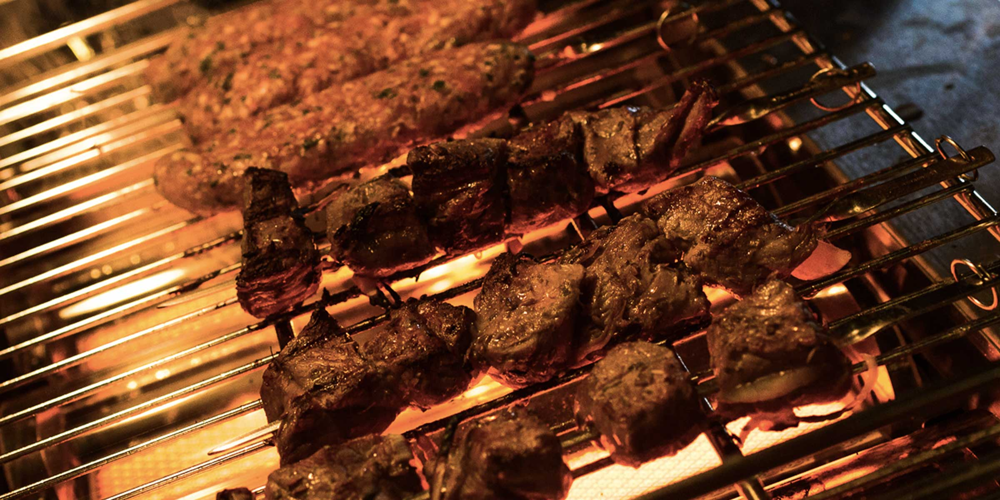

ビールが飲めない女性の方にも人気のあるさくらんぼビールや白ビールなどのベルギービールやウイスキー、 カクテル、ワインなど、その他のお酒も豊富に取り揃えております。 軽くスタンディングで、仲間内でテーブルを囲んだり、天気のいい日はテラスで夜風に当たりながらなど、 シチュエーションで使い分けて、異なる雰囲気をお楽しみください。
リストランテ・ディ・デジタルスケープ
東京都渋谷区道玄坂1-10-8 渋谷道玄坂東急ビル8F
+81-3-5459-6206
train@dsp.co.jp

店舗をリニューアルいたしました。店内の仕上げはスタッフ総出でおこないました。 手作り感溢れる空間で料理をお楽しみください。
新入荷の白ビールは、ベルギーのブリュッセルで生まれ、素晴らしいバランスは他に類を見ない味わいです。 ファンならずとも是非この機会に味わってください。
やる気のある方お待ちしています。店舗に採用担当がおりますので、直接お電話ください。メールでお問い合わせいただいても構いません。
店舗からの最新情報をお届けします。